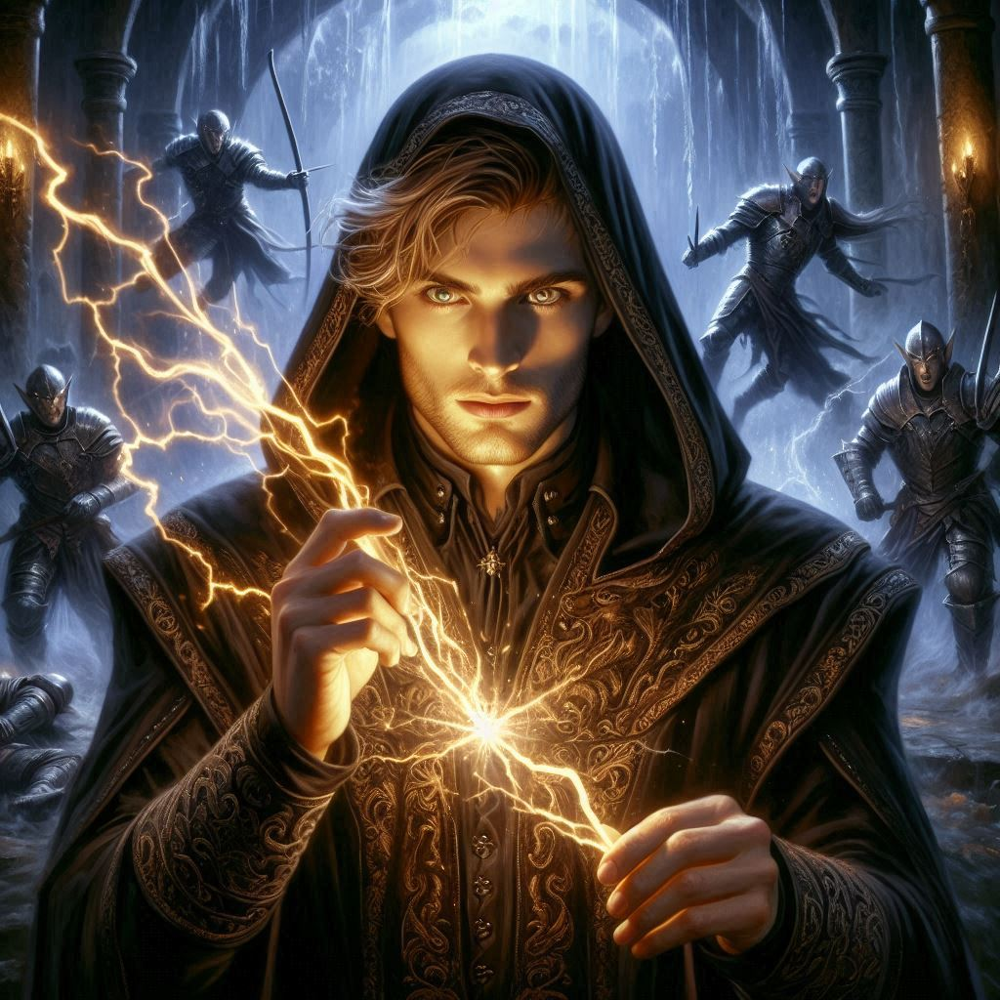
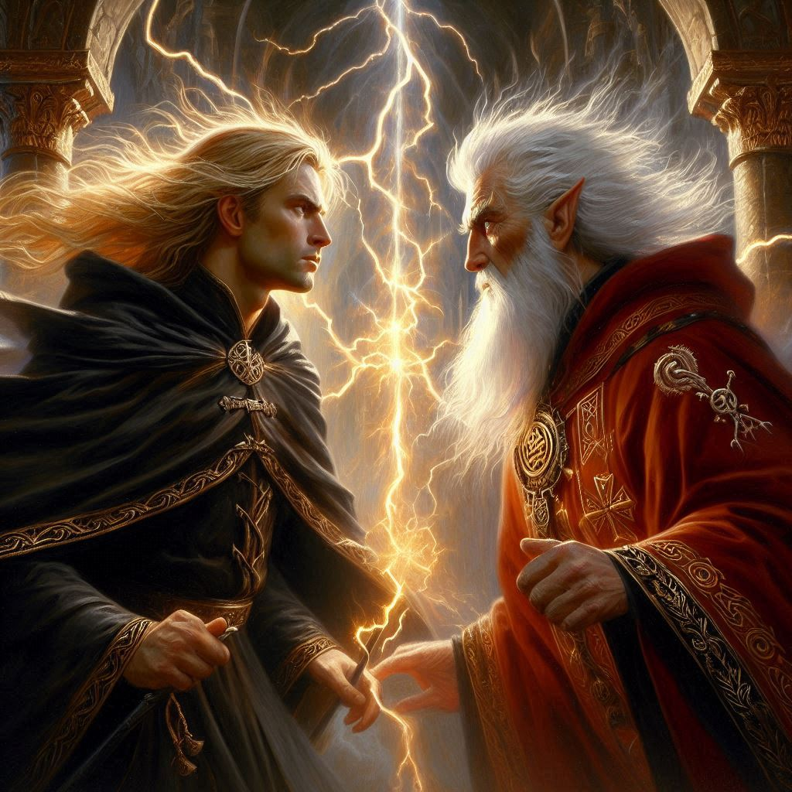

The Power of Two
You stand at the threshold of Hemlock Caverns, its ominous mouth yawning wide, a cold gust of wind blowing from within, chilling your skin. The damp scent of earth and ancient magic fills your lungs as you glance at Jorsh. His once-familiar face is shadowed with the years of his absence and the dark magic he now wields, but something inside you pulls toward him, the same pull you felt when you were younger. You know this is reckless—dangerous, even—but you’ve made your choice. You will follow Jorsh into the depths, not as his prisoner, but as his ally.
“Are you sure?” Jorsh asks, his voice soft but edged with curiosity. His golden eyes study you intently, as if trying to gauge your true intent. “We might not come back from this, Kira.”
You nod, your heart racing. “I’m sure.”
With that, you and Jorsh plunge into the caverns, leaving the light of day behind. The passage quickly narrows, twisting and turning as you descend into darkness. Jorsh conjures a faint, ethereal light that hovers between you, casting long, eerie shadows against the jagged walls. The deeper you go, the more the air thickens with the stench of rot and decay, and your mind drifts to what lies ahead—Varis, the dark elf who seeks to unleash the demon Yaldaboath, and his army of merciless dark elves. Somewhere within this labyrinth, Onyx is being held captive, waiting to be sacrificed.
Jorsh speaks as you walk, his voice reverberating softly against the stone. “Varis is not just after Yaldaboath’s power. He wants to open the portal to the Realm of Shadows permanently. He’s planning something far worse than we thought.”
Your eyes narrow. “Then why are you after Yaldaboath’s power?”
Jorsh hesitates, his expression difficult to read in the dim light. “For redemption. I’ve made mistakes, Kira, but I can’t let Varis win. With Yaldaboath’s power, I can set things right.”
You feel the weight of his words, but you aren’t sure you believe him entirely. The old Jorsh you knew is still there, somewhere beneath the layers of darkness and vengeance, but this new version of him… it’s unpredictable. Still, you press on. You’ve come too far to turn back now.
As the cavern widens, you hear a faint clatter—metal against stone. You freeze, motioning for Jorsh to stop. He nods, and the two of you inch forward until you come upon a massive underground chamber. The air here feels thick with magic, the very stones pulsating with a sinister energy.
At the center of the chamber stands Varis, tall and imposing, his silver hair gleaming in the dim light. His dark elf minions flank him, their eyes glowing with malevolent intent. Onyx lies bound and unconscious on an altar behind him, surrounded by runes etched in blood. Varis’s hands are raised, chanting in a language you don’t understand, but you can feel the power thrumming through the chamber, growing stronger with each word.
“Something’s wrong,” Jorsh breathes, his words almost inaudible.
“We’re too late,” you whisper, panic rising in your chest. You instinctively reach for your bow, but Jorsh places a hand on your arm.
“Not yet,” he murmurs. “But we’re not in Hemlock Caverns anymore. We must have passed through a hidden portal into the Shadow Realm.”
“And you couldn’t detect us moving through an interdimensional portal with all your powerful magic?” you hiss. You suddenly feel very anxious. Worried that Jorsh is not as powerful as he has suggested.
He scowls at you. Then, without another word, Jorsh steps forward, his presence no longer concealed. The dark elves stir, hissing in recognition as they draw their weapons, but Varis remains focused on his ritual. Jorsh raises his hand, and with a flick of his wrist, dark energy crackles through the air, striking two of Varis’s minions and sending them crashing into the walls. You waste no time, notching an arrow and firing, taking down another dark elf before it can even react.
The battle erupts in a flurry of steel and magic. Dark elves rush at you from every direction, but your ranger instincts kick in, each movement fluid and precise. You duck beneath a swinging blade, firing arrows into the throng of enemies with deadly accuracy. At your side, Jorsh commands the dark magic with a mastery that both awes and terrifies you. He blasts foes away with bursts of energy, weaving through the chaos like a phantom.
Varis, seeing his minions fall, turns his gaze on you both. His voice is cold, cutting through the noise. “You think you can stop me, Jorsh? You’ve learned nothing. Yaldaboath will rise, and you will be nothing but ashes.”
Jorsh smirks, his voice dark and taunting. “I’ve learned enough.”
With a roar, Varis unleashes a torrent of magic, but Jorsh is ready. The two forces collide in a brilliant explosion of light and shadow, sending a shockwave through the chamber. You stagger back, barely keeping your footing. As the dust clears, you see Varis and Jorsh locked in a fierce duel, their magic crackling between them.
But your attention is drawn to Onyx. He’s still unconscious, the ritual nearly complete. The runes glow brighter with every second, and you know Yaldaboath’s summoning is imminent. You glance at Jorsh, who is struggling to hold his own against Varis.
This is it. The moment of truth. You can feel the weight of the decision pressing down on you.